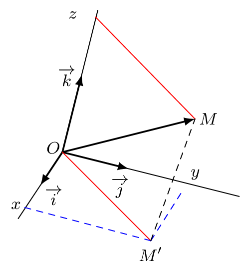

Produit scalaire et repère orthonormé
Définition :
Un repère \((O \, ; \, \ve{i}, \ve{j}, \ve{k})\) de l’espace est dit orthonormé lorsque les vecteurs \(\ve{i}\), \(\ve{j}\) et \(\ve{k}\) sont deux à deux orthogonaux et de norme unitaire.
Remarque :
Avoir trois vecteurs deux à deux orthogonaux implique d’avoir des vecteurs non coplanaires, ce qui permet de définir une base de l’espace.
Propriété :
Soient \(\ve{u}\), \(\ve{v}\) deux vecteurs de coordonnées respectives \(\begin{pmatrix}x\\y\\z\end{pmatrix}\) et \(\begin{pmatrix}x'\\y'\\z'\end{pmatrix}\). Alors : \[\ve{u} \cdot \ve{v} = xx'+yy'+zz'\]
Démonstration :
On a \(\ve{u}=x\ve{i}+y\ve{j}+z\ve{k}\) et \(\ve{v}=x'\ve{i}+y'\ve{j}+z'\ve{k}\). Alors : \[ \begin{aligned} \ve{u} \cdot \ve{v} &= (x\ve{i}+y\ve{j}+z\ve{k}) \cdot (x'\ve{i}+y'\ve{j}+z'\ve{k}) \\ &= xx'\ve{i}^2 + yy'\ve{j}^2 + zz'\ve{k}^2 \\ &= xx'+yy'+zz' \end{aligned} \]

Reprendre l’exercice précédent avec les coordonnées.
Afficher la correction :
On se place dans le repère \((A \, ; \, \ve{AB} \, , \, \ve{AD} \, , \, \ve{AE})\). Ainsi \(A(0;0;0)\), \(B(1;0;0)\), \(I \left(1;\frac{1}{2};1\right)\) et \(J\left(0;\frac{1}{2};1\right)\).
Donc \(\ve{AJ} \begin{pmatrix} 0\\ \frac{1}{2}\\1 \end{pmatrix}\) et \(\ve{BI} \begin{pmatrix} 0\\\frac{1}{2}\\1 \end{pmatrix}\) et \(\ve{AJ} \cdot \ve{BI} = 0\times 0 + \frac{1}{2} \times \frac{1}{2} + 1 \times 1 = \dfrac{5}{4}\).
Donc les droites ne sont pas orthogonales.
On considère deux droites \(d\) et \(d'\) dont les représentations paramétriques sont : \[d:\left\{\begin{array}{l}x=-1+2t\\y=3-t\\z=1+3t\end{array}\right. , t \in \mathbb{R} \qquad \quad \text{et} \quad \qquad d':\left\{\begin{array}{l} x=-1-4t'\\y=4+t'\\z=-8+3t'\end{array} \right. , t' \in \mathbb{R}\] Les droites sont-elles perpendiculaires ?
Afficher la correction :
\(\ve{u}(2;-1;3)\) et \(\ve{u'}(-4;1;3)\) sont des vecteurs directeurs de \(d\) et \(d'\) respectivement. \[\ve{u} \cdot \ve{u'} = 2 \times (-4) + (-1)\times 1 + 3 \times 3 = 0\] Donc les vecteurs sont orthogonaux, donc les droites supports sont orthogonales. Les droites \(d\) et \(d'\) étant orthogonales, elles sont perpendiculaires si et seulement si elles sont sécantes. On a : \[\left\{\begin{array}{l} -1+2t=-1-4t'\\ 3-t=4+t'\\ 1+3t=-8+3t'\end{array}\right. t,t' \in \mathbb{R} \Longleftrightarrow \left\{\begin{array}{l} t'=-1-t\\ -1+2t=-1-4(-1-t)\\ 1+3t=-8+3(-1-t) \end{array}\right. \Longleftrightarrow \left\{\begin{array}{l} t=-2\\ t'=1 \end{array}\right. \] On en déduit donc que \(M \in d \cap d' \Longleftrightarrow t=-2\) et \(t'=1\). On en déduit que les droites sont donc perpendiculaires et que les coordonnées du point d’intersection sont \((-5;5;-5)\).
Propriété :
On munit l’espace d’un repère orthonormé et on considère \(\ve{u}\begin{pmatrix}x\\y\\z\end{pmatrix}\) et \(A(x_A \, ; \, y_A \, ;\, z_A)\) et \(B(x_B \, ; \, y_B \, ;\, z_B)\) deux points de l’espace.
- \(\norm{\ve{u}} = \sqrt{x^2+y^2+z^2}\)
- \(\norm{\ve{AB}}=\sqrt{(x_B-x_A)^2+(y_B-y_A)^2+(z_B-z_A)^2}\)
L’espace est muni d’un repère orthonormé \((O \, ; \, \ve{i}, \ve{j}, \ve{k})\) et on considère les points \(A(-1\,;\,2\,;\,0)\), \(B(1\,;\,2\,;\,4)\) et \(C(-1\,;\,1\,;\,1)\).
- Démontrer que les points A, B et C ne sont pas alignés.
Afficher la correction :
\(\ve{AB}\begin{pmatrix} 2\\0\\4 \end{pmatrix} \quad \text{et} \quad \ve{AC}\begin{pmatrix} 0\\-1\\1 \end{pmatrix}\)
Il n’existe pas de réel \(k\) non nul tel que \(\ve{AB}=k\ve{AC}\), donc les vecteurs ne sont pas colinéaires, ce qui entraîne que les points A, B et C ne sont pas alignés.
- Calculer le produit scalaire \(\ve{AB} \cdot \ve{AC}\).
Afficher la correction :
\(\ve{AB} \cdot \ve{AC}=2\times 0+0\times (-1)+4\times 1=4\)
- En déduire la mesure de l’angle \(\widehat{BAC}\), arrondie au degré.
Afficher la correction :
\(\ve{AB} \cdot \ve{AC}=AB\times AC \times \cos\left(\widehat{\text{BAC}}\right)=4\) Or \(AB=\norm{\ve{AB}}=\sqrt{2^2+0^2+4^2} = \sqrt{20}\) et \(AC=\norm{\ve{AC}}=\sqrt{0^2+(-1)^2+1^2} = \sqrt{2}\). On a alors \(\cos\left(\widehat{\text{BAC}}\right)=\dfrac{4}{AB\times AC}=\dfrac{4}{\sqrt{20}\sqrt{2}}=\dfrac{4}{\sqrt{40}}=\dfrac{2}{\sqrt{10}}=\dfrac{\sqrt{10}}{5}\). On en déduit \(\widehat{\text{BAC}}\approx 51^\circ\).